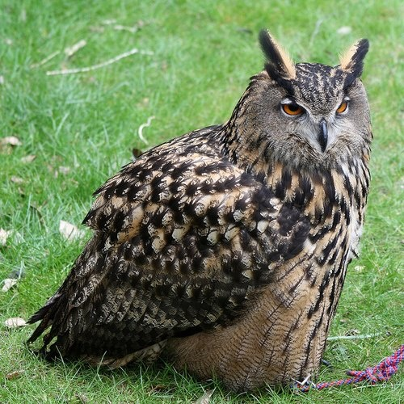
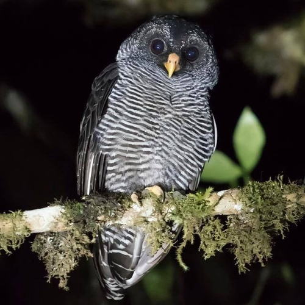

Estrigiformes
Las rapaces nocturnas o estrigiformes (Strigiformes) son un orden de aves compuesto por la familias Tytonidae
(lechuzas), y la familia Strigidae que incluye búhos, mochuelos, tecolotes, autillos, cárabos, el ñacurutú y el
chuncho, entre otras.
Se encuentran en todo el mundo, excepto en la Antártida, la mayor parte de Groenlandia y en algunas islas remotas.
Son grandes cazadores, de hábitos generalmente nocturnos y solitarios. Se alimentan principalmente de pequeños mamíferos,
insectos y otras aves, aunque algunas especies se especializan en la pesca.

Estrígidos
Estrígidos

Titónidos
Titónidos